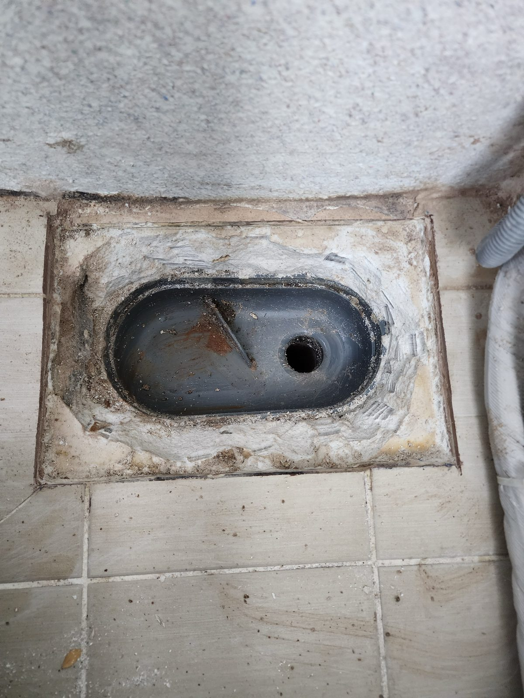
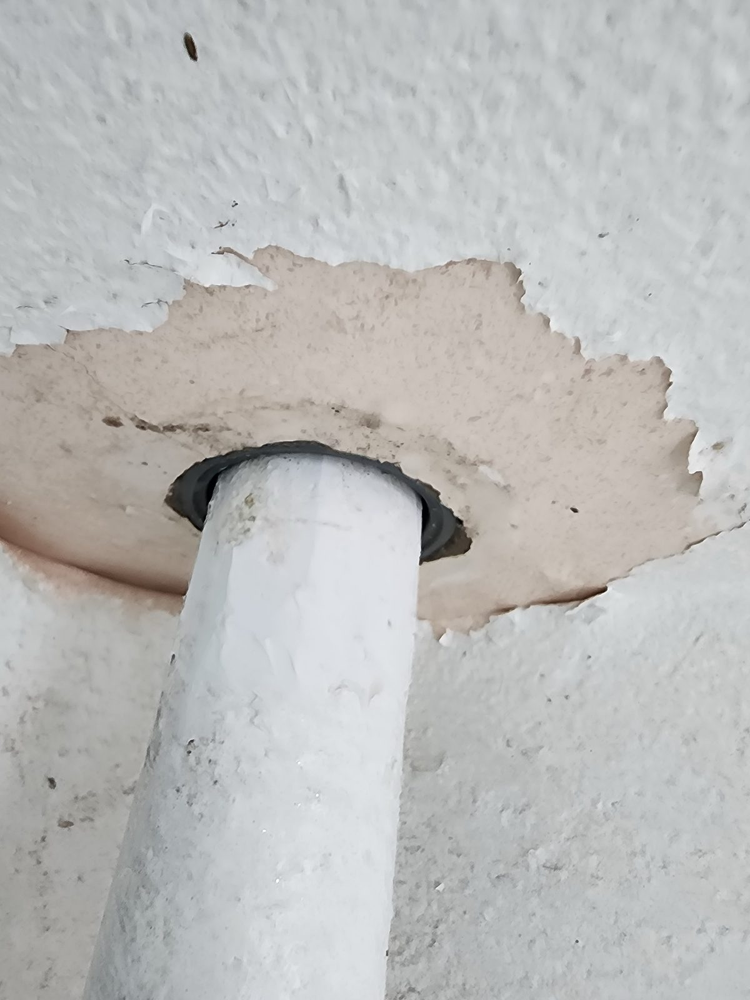
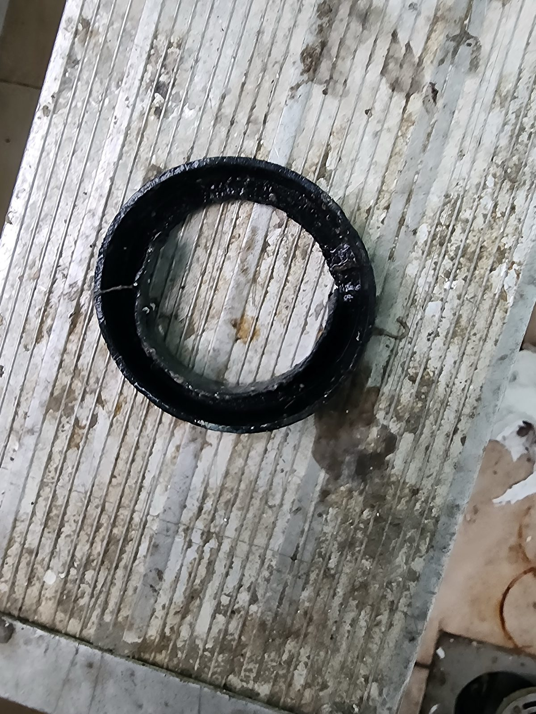
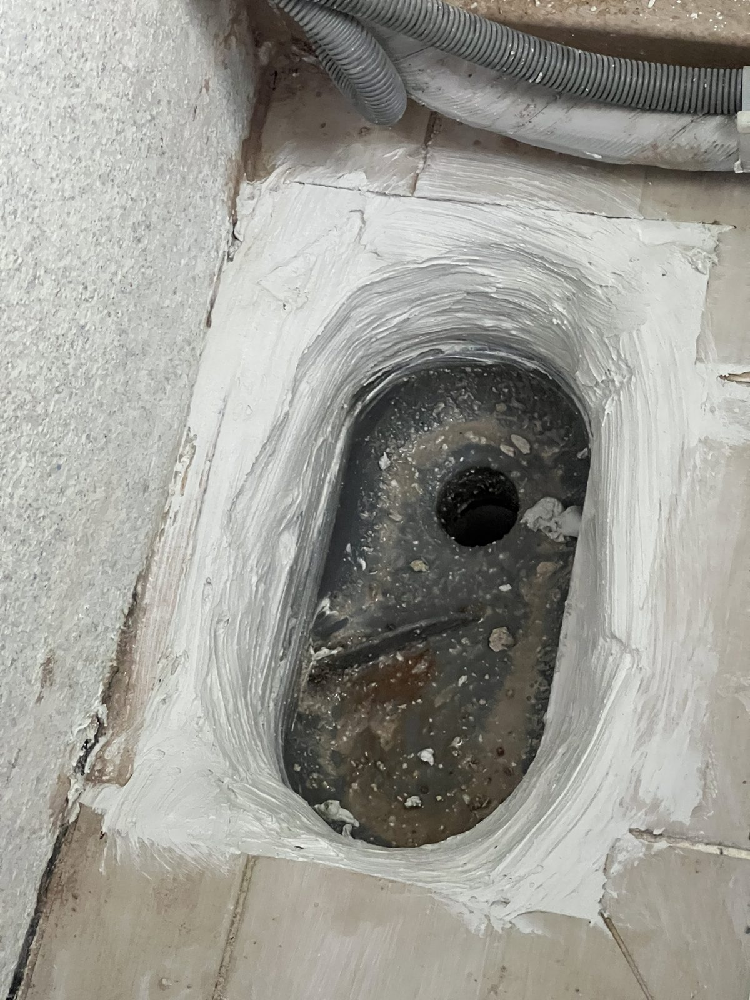
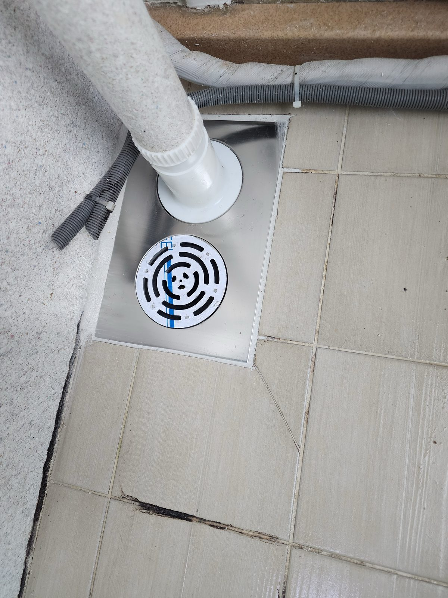

대전 목양마을아파트 상·하층 우수관 보수 — 우수 배수부품 교체

작업 핵심
현장 작업 한눈에 보기
- 현장
- 대전 목양마을아파트
- 문제
- 바닥 배수구와 상·하층 우수관
관통부·기존 부속 점검 - 작업
- 배수구 테두리 보수재 도포
우수관 연결 부품 교체 - 결과
- 우수관 하부 연결 부품과
배수구 그릴 설치
대전 목양마을아파트에서 바닥 배수구와 위·아래층을 잇는 우수관 관통부를 차례로 확인한 현장입니다. 기존 마감과 원형 부속을 살핀 뒤, 우수관 연결 부품을 교체하고 배수구 그릴을 설치해 마무리했습니다.
먼저 바닥 배수구부터 확인했습니다
배수구 내부가 드러나자 가장자리의 기존 마감과 주변 타일 경계를 함께 볼 수 있었습니다. 손을 대기 전 모습을 먼저 남기고, 다음에 확인할 위치를 따라갔습니다.

시선을 위쪽 관통부로 옮겼습니다
바닥만 보고 끝내지 않고 우수관이 천장을 통과하는 지점도 가까이 살폈습니다. 관통부 위치와 주변 표면, 배관이 이어지는 방향을 한 장에 기록했습니다.

작업 중 원형 부속을 따로 확인했습니다
작업 중에는 원형 부속의 형태가 보이도록 따로 사진을 남겼습니다. 이어지는 사진에서는 배수구 가장자리의 보수재 도포 상태를 확인할 수 있습니다.

배수구 테두리를 따라 마감했습니다
배수구 가장자리와 주변 바닥에 흰색 보수재를 도포했습니다. 중앙의 배수 통로와 테두리 작업 범위가 함께 보이도록 마감 상태를 남겼습니다.

우수 배수부품 교체를 마쳤습니다
우수관 하부 연결 부품을 교체하고 배수구 그릴을 설치한 뒤의 모습입니다. 수직관과 하부 연결 부품, 배수구 그릴이 함께 보이도록 마무리 상태를 기록했습니다.
